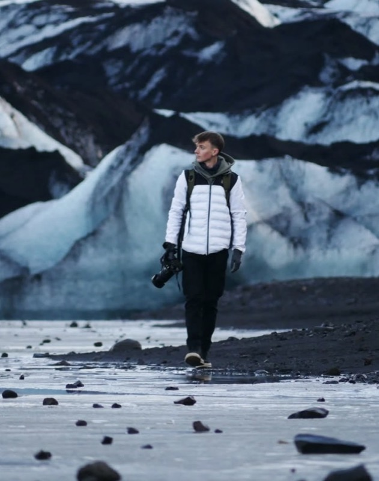

BRAXTON STUDIOS
A Short-Form Documentary

When a respected Scottish news presenter and his amateur team return to defend their standing at the World Stone Skimming Championships, they find a sport in crisis — a small island tradition built on trust and community fundraising, now shaken by its first-ever cheating scandal.
Footage from the 2025 World Stone Skimming Championships.
The World Stone Skimming Championships have run on Easdale Island for over three decades on little more than a handshake — a self-officiated, community-run event where the honour system is the only system. In 2025, that system broke: the event's first-ever cheating scandal called into question not just one result, but the informal trust the whole tradition depends on. The same year produced the championship's first-ever American winner, pulling a niche Scottish curiosity into an unfamiliar international spotlight at the exact moment its credibility was under strain. The Semi Skimmers follows a returning presenter and his team back into that tension — a story about what a small community protects when the rules are unwritten, and what happens the moment someone stops playing by them.
A respected Scottish news presenter and his amateur crew prepare to defend their standing at the championships, framed by the easy camaraderie and low stakes that first drew them to the sport.
On Easdale, a tiny community sustains a world championship through volunteer labour and fundraising alone — a tradition of trust that has quietly held the event together for over thirty years.
As the competition unfolds, the fallout from 2025's cheating scandal surfaces — forcing the team, and the island, to reckon with what the event is actually built on.
In 2025, the World Stone Skimming Championships were rocked by their first-ever cheating scandal — an unprecedented breach for an event that has always relied on honesty rather than officiating to function. The same year crowned the championship's first-ever American champion, drawing new international attention to a competition that had, until now, operated almost entirely under the radar.
That collision — a scandal threatening the event's founding trust, arriving in the exact year it broke through internationally — makes this the moment to tell this story, before the sport either fractures or finds a new equilibrium.
Subject and contributor, and the originating research connection behind the film — a returning competitor with a personal stake in the championship's outcome.
Broadcast credits including BBC, Netflix, and STV. Leads creative direction and production for Braxton Studios' documentary and brand work.

Founder of Etive Studios Ltd, with client credits including the BBC and ITV. Oversees cinematography and executive production on the film.